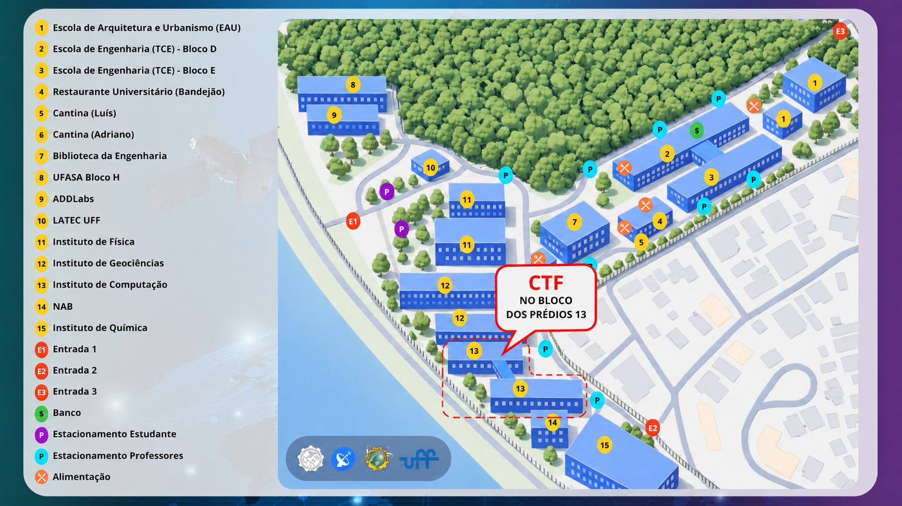
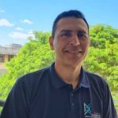
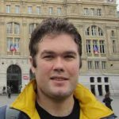

Sem ataque, só análise
Nada de exploração ofensiva. Você examina artefatos, reconstrói o que ocorreu e sustenta cada conclusão com evidência.
Capture The Flag · SBSeg 2026 · Edição FIRST
Um CTF de defesa, baseado nos desafios do FIRST (Forum of Incident Response and Security Teams), o fórum que reúne os times de resposta a incidentes do mundo inteiro. Aqui não tem ataque, só análise de artefatos, evidências e incidentes que, num cenário real, poderiam ter passado despercebidos. Para todos os níveis: não precisa de experiência prévia.
Vagas esgotadas!
As vagas para o CTF do SBSeg 2026 estão esgotadas: evento lotado em apenas uma semana de inscrições. A partir de agora, novas inscrições entram em uma lista de espera. Em caso de desistências, os participantes da lista poderão ser convocados por ordem de inscrição.
As vagas estão esgotadas. Novas inscrições entram na lista de espera, pelo formulário oficial e, em caso de dúvidas e sugestões, entre em contato com a organização.
Cada desafio tem um nome, uma descrição do que fazer e uma flag própria para submeter. São independentes: o time escolhe por onde começar.
desafiosPasse o mouse sobre um desafio para ver o tipo de análise envolvido.
Divulgação
Um resumo rápido do que é o CTF do SBSeg 2026 e de como sua equipe participa. Assista e compartilhe com quem você quer no seu time.
Divulgue nas suas redes e nos grupos do seu curso: quanto mais times, melhor a competição.
Assistir no YouTube →O desafio
Competições tradicionais premiam a invasão. Esta inverte a lógica: você está do lado de quem investiga, entende e prova o que aconteceu. O foco é exclusivamente técnico: análise de logs, artefatos e outras evidências.
Nada de exploração ofensiva. Você examina artefatos, reconstrói o que ocorreu e sustenta cada conclusão com evidência.
Jogamos aqui o conjunto de desafios da Conferência Anual do FIRST: desafios independentes de análise, e o time escolhe por onde começar.
Os desafios pedem competências complementares. Junte gente de áreas diferentes, porque a colaboração é parte da estratégia.
Há desafios para cada ponto da curva. Nunca jogou um CTF? Tem espaço, e desafio, para você também.
Categorias
Cada desafio entrega uma tarefa relacionada a um incidente ou parte dele, e abre uma frente de análise, de forma independente. Você não precisa dominar todas: pode escolher uma, e o time define na hora quem cobre o quê.
Reconstrua conexões a partir de capturas de pacotes e siga o rastro do incidente. Alguns desafios usam IPv6.
Isole o binário, observe o comportamento e descreva o que a amostra realmente faz, com segurança.
Quebre a ofuscação, identifique o esquema e recupere o segredo que o atacante tentou esconder.
Leia o código como quem procura a brecha. Encontre a falha antes que ela custe caro.
Cruze registros, monte a linha do tempo e separe o ruído do que de fato importa para o caso.
Outras frentes de análise técnica entram em cena ao longo do dia, equilibrando dificuldade e variedade.
A base internacional
O FIRST (Forum of Incident Response and Security Teams) reúne os times de resposta a incidentes do mundo inteiro. No SBSeg 2026 rodamos um replay do CTF da Conferência Anual do FIRST, um subconjunto dos desafios de referência internacional, adaptado para um dia de competição.
O CERT.br, que há mais de 15 anos é um dos responsáveis pela execução do CTF do FIRST, organiza e apoia esta edição do CTF na SBSeg 2026, provendo a infraestrutura, o conteúdo e a organização necessários. Você só precisa do seu equipamento e da sua equipe.
Experimente
Para você ter noção do que vai encontrar no dia, resolva este mini-desafio no estilo dos desafios do FIRST. Decifre a evidência e submeta a flag.
Durante a análise de um incidente, o time interceptou esta mensagem deixada
pelo atacante. Ela está codificada, não cifrada. Recupere o conteúdo original e submeta a flag
no formato CTF{...}.
Q1RGe2RlZmVzYV9lbV9hY2FvfQ==
Codificação não é criptografia: Base64 esconde, mas não protege. Qualquer terminal (ou o console do navegador) decodifica.
Formato
O essencial para planejar sua equipe. Detalhes finais de data e local serão confirmados na divulgação oficial.
Para todos os níveis
Você não precisa ser especialista para participar: precisa ter vontade de investigar. Há desafios pensados para quem está começando e para quem já compete há anos. E, no fim, o melhor prêmio costuma ser quem você conhece tentando resolver os mesmos desafios.
Nunca ouviu falar? Um CTF (Capture The Flag) é um jogo de quebra-cabeças computacionais: você analisa um artefato, descobre o que aconteceu e encontra a flag, um código que prova a solução. Você aprende jogando, e pode experimentar um mini-desafio agora mesmo.
Quer treinar antes? Plataformas gratuitas: picoCTF · CTF101 · CyberDefenders
Por que participar
Além da competição, o CTF é uma porta de entrada para a área de segurança: na prática, com gente de verdade e no principal evento científico de segurança do Brasil.
Técnicas reais de análise e resposta a incidentes, no ritmo de um caso de verdade. Ninguém aprende defesa só na teoria.
Análise de tráfego, malware, forense e criptografia estão entre as competências mais demandadas em segurança.
Estudantes de todo o país, professores, o pessoal do CERT.br e empresas da área, todos no mesmo lugar.
Uma boa colocação no placar é um diferencial concreto para currículo, estágio e primeiras vagas na área.
Reconhecimento dos melhores times durante o SBSeg e premiação para os primeiros colocados, com apoio confirmado da Tempest e do Cyber Horizon Group. E tem brinde do CERT.br para todo participante que atingir a pontuação mínima.
Enigmas para resolver, códigos para quebrar e desafios para fechar junto com o seu time. Difícil não se divertir.
Inscrição
Novas inscrições entram na lista de espera, pelo formulário oficial. A inscrição tem valor simbólico de R$ 30 por participante. Monte sua equipe: o tamanho ideal é 4, mas times menores, de 1 a 3, também podem competir. Vai ter premiação para os melhores colocados, com apoio confirmado da Tempest e do Cyber Horizon Group: aguarde novidades!
Vagas esgotadas!
As vagas para o CTF do SBSeg 2026 estão esgotadas: evento lotado em apenas uma semana de inscrições. A partir de agora, novas inscrições entram em uma lista de espera. Em caso de desistências, os participantes da lista poderão ser convocados por ordem de inscrição.
Formulário oficial do CTF do SBSeg 2026, agora usado para a lista de espera. Uma equipe já inscrita pode ajustar os dados falando com a organização.
Operação do CTF conduzida pelo CERT.br · infraestrutura e leaderboard ao vivo por conta da organização.
O CERT.br conduz toda a infraestrutura, a plataforma de submissão e o leaderboard ao vivo. O CAIS/RNP apoia com o time de testes e validação da plataforma. A Tempest e o Cyber Horizon Group confirmaram apoio na premiação do CTF.
RealizaçãoLocal
O CTF é presencial, no campus da Praia Vermelha da UFF, em Niterói (RJ). A competição fica no bloco dos prédios 13, o Instituto de Computação, marcado em vermelho no mapa abaixo.

No próprio campus há restaurante universitário e cantinas, marcados na legenda do mapa. Traga também água e um lanche: o dia de competição é longo.
Hospedagem
Sugestões de hotéis próximos ao campus da Praia Vermelha, em Niterói, para quem chega de outra cidade. Nenhum deles tem convênio com o CTF: são apenas indicações de apoio, com o endereço, o site oficial e a rota até o local da competição. Tarifas e disponibilidade mudam, então confirme sempre direto com o estabelecimento e reserve cedo.
Rua General Osório, 62 · São Domingos, Niterói – RJ
Rua Engenheiro Roberto Velasco Cardoso, 321 · Gragoatá, Niterói – RJ
Rua General Andrade Neves, 134 · Centro, Niterói – RJ · CEP 24210-001
Site oficial reserva@niteroipalacehotel.com.br Rota até o CTF
Rua Dr. Paulo Alves, 14 · Ingá, Niterói – RJ · CEP 24210-445
Rua Belisário Augusto, 21 · Icaraí, Niterói – RJ · CEP 24230-200
Av. Alm. Ary Parreiras, 12 · Icaraí, Niterói – RJ
Travessa Dr. João Francisco da Matta, 12 · entrada pela Rua Mariz e Barros, 97 · Icaraí, Niterói – RJ
Rua Mariz e Barros, 109 · Icaraí, Niterói – RJ
Rua Mariz e Barros, 147 · Icaraí, Niterói – RJ
Dica para equipes de estudantes: dividir um quarto quádruplo costuma sair bem mais em conta, e Icaraí e o Ingá ficam a poucos minutos do campus de táxi ou aplicativo. Hospedar-se do lado de Niterói evita depender da barca ou da ponte logo cedo no dia da competição.
Vai ficar para o SBSeg 2026 depois do CTF? O simpósio acontece em Armação dos Búzios (RJ), de 1 a 4 de setembro, com hospedagem oficial, tarifas negociadas e transfer saindo do Rio de Janeiro. Tudo está na página Local do Evento do SBSeg 2026.
Lista baseada nas sugestões de hospedagem próximas ao IC/UFF divulgadas para eventos anteriores no mesmo campus. Endereços e sites conferidos, mas sem convênio com o CTF: valores e disponibilidade devem ser confirmados diretamente com cada hotel.
Coordenação
A organização do CTF do SBSeg 2026 reúne a academia e o CERT.br, alinhada à coordenação oficial do evento.

UFMG
CoordenaçãoCERT.br
Coordenação
UNIPAMPA
CoordenaçãoFAQ
As dúvidas mais comuns de quem está pensando em participar. Não achou a sua? Pergunte pelo formulário de contato.
Não. Há desafios para todos os níveis, inclusive pensados para quem nunca jogou. Você aprende durante a competição, e o time se ajuda.
É um código que pode ser um hash, uma string, um endereço IP, um timestamp ou qualquer coisa que a descrição do desafio peça. A flag é a prova de que você resolveu o desafio. Você a encontra analisando as evidências e a submete na plataforma para pontuar.
Pode. As equipes vão de 1 a 4 pessoas, então dá para competir sozinho, embora o ideal seja um time de 4. Está sem equipe e quer uma? Entre em contato com a organização, que ajudamos a conectar interessados.
Sim. A participação é presencial: toda a equipe deve estar no local do evento.
Pelo formulário oficial de inscrição. Com as vagas esgotadas, os dados preenchidos agora entram na lista de espera e a organização convoca por ordem de inscrição em caso de desistências. Ficou com dúvida? Fale com a organização.
A inscrição custa R$ 30 por participante, um valor simbólico, e é feita pelo formulário oficial. Os detalhes de pagamento seguem a divulgação oficial do SBSeg 2026. Com as vagas esgotadas, quem se inscreve agora entra na lista de espera e só paga se for convocado.
Seu notebook e vontade de investigar. O ideal é que ele rode um sistema Linux: com ele você tem todas as ferramentas necessárias para resolver os desafios. O Linux também pode rodar em uma máquina virtual, desde que tenha espaço em disco e memória RAM suficientes. Haverá internet no local e alguns desafios podem usar servidores online.
Todos os desafios da plataforma estão em inglês técnico: enunciados, descrições e materiais. Não é preciso fluência, mas ajuda estar à vontade com a terminologia técnica de segurança em inglês.
Não. Este CTF é 100% defesa: você analisa artefatos, evidências e incidentes. Nada de exploração ofensiva.
Comece pelo mini-desafio aqui do site e treine em plataformas gratuitas como picoCTF, CTF101 e CyberDefenders.
Contato
Dúvidas, sugestões ou inscrição da equipe? Envie uma mensagem e a organização responde.